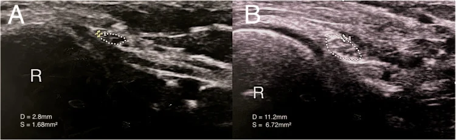

Il ramo sensitivo del nervo radiale emerge da sotto un muscolo nella parte bassa dell'avambraccio e corre superficiale fino al dorso della mano. Quando viene compresso in quel punto, compaiono bruciore, formicolio e intorpidimento sul dorso del pollice e della zona vicina.
È una sofferenza puramente sensitiva: non c'è e non può esserci perdita di forza. Se c'è debolezza, il problema è un altro.

Come si manifesta
- Bruciore, formicolio o intorpidimento sul dorso del pollice, del primo spazio fra le dita e della zona adiacente del dorso della mano.
- Peggiora con i movimenti di rotazione dell'avambraccio e piegando il polso verso il mignolo.
- Peggiora anche con qualsiasi cosa stringa il polso: cinturini dell'orologio, braccialetti, manette da lavoro, polsiere.
- Percuotendo il punto dolente si può evocare una scossa verso il pollice.
- Nessuna perdita di forza, nessuna ipotrofia muscolare.
Un dato utile da conoscere: nella casistica storica di riferimento, la sindrome di De Quervain era presente contemporaneamente nel 50% dei casi. Gli autori sottolineano l'importanza di riconoscere la sindrome di Wartenberg prima di operare la tenosinovite, per evitare complicanze postoperatorie inattese.[1]
Quando preoccuparsi
Contatta il medico presto se
- compare una perdita di forza nella mano o nel polso: non fa parte di questo quadro e indica qualcos'altro;
- i sintomi sono comparsi dopo un trauma, una frattura o un intervento in quella zona;
- il dolore è molto intenso, continuo, con la pelle che cambia colore o temperatura;
- i disturbi si estendono a più dita o a entrambe le mani.
Cosa puoi fare tu
Fai
- Togli tutto quello che stringe il polso: orologio, braccialetti, polsiere, elastici.
- Guarda se il lavoro comporta guanti stretti, manette o attrezzi che comprimono quella zona.
- Riduci per un periodo i movimenti ripetuti di rotazione dell'avambraccio.
- Per la terapia farmacologica chiedi al medico.
Non fare
- Non continuare a portare ciò che comprime il polso sperando che il disturbo passi comunque.
- Non affrettarti a fare esami diagnostici senza aver chiesto il parere del tuo medico.
Servono esami?
La diagnosi è clinica: la distribuzione esatta dei disturbi, il punto dolente lungo il decorso del nervo e la provocazione con i movimenti del polso. L'elettromiografia può documentare la sofferenza del ramo sensitivo, ma non è sempre necessaria.
Quando il dolore è nella stessa zona della sindrome di De Quervain, e tanto più se si sta valutando un intervento per quella, questa distinzione va fatta prima.[1]
Le cure, e quanto funzionano
Si parte sempre dal trattamento conservativo, che consiste innanzitutto nel togliere la compressione: cambiare ciò che stringe il polso, modificare gesti e attrezzi, eventualmente un tutore per un periodo limitato.
La casistica di riferimento, cinquanta pazienti per 52 casi, riporta il 71% di risultati da buoni a eccellenti con il trattamento conservativo e il 74% con l'intervento di liberazione del nervo.[1]
Sono percentuali molto vicine, e vanno lette sapendo che i due gruppi non erano confrontabili — l'intervento si fa in chi non è migliorato — ma suggeriscono di dare tempo al trattamento conservativo prima di considerare la chirurgia.
Quando serve lo specialista
Per distinguere questa condizione dalla sindrome di De Quervain e dalle altre cause di dolore in quella zona, soprattutto se le due coesistono, e per identificare la compressione da rimuovere, che spesso è qualcosa di quotidiano.
E, se i disturbi non si risolvono, per discutere, numeri alla mano, quale trattamento sia più idoneo per la tua situazione.
Da dove vengono queste informazioni
- Lanzetta M, Foucher G. Entrapment of the superficial branch of the radial nerve (Wartenberg's syndrome): a report of 52 cases. Int Orthop 1993;17(6):342–345. Cinquanta pazienti, 52 casi.
La fonte principale di questa scheda è una casistica del 1993, senza gruppo di confronto: su questa condizione non sono stati pubblicati studi randomizzati, e le percentuali riportate descrivono l'esperienza di un singolo centro.
Scheda aggiornata il 6 novembre 2026. Prossima revisione prevista entro novembre 2028.
Cerca un'altra scheda
Un disturbo, un trattamento, o anche solo il punto che fa male: «formicolio», «tallone», «spalla congelata».